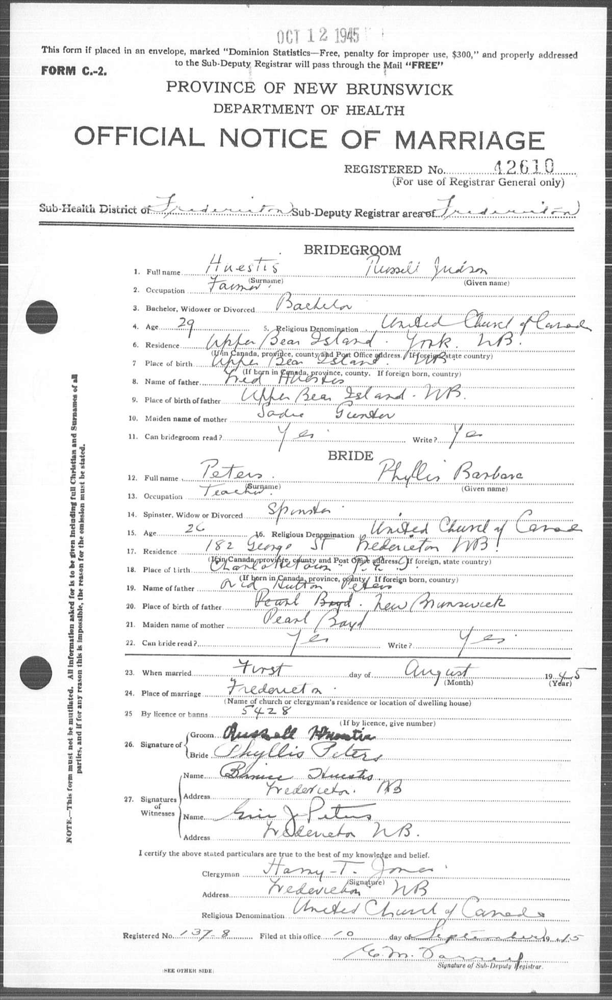

Russell Judson Huestis 1915 - 1996
[ Home ] | [ Calendar ] | [ Surnames Index ] | [ Family History ]Russell Huestis, the husband of Phyllis Barbara Peters (the fourth cousin once-removed on the father's side of Nigel Horne), was born in Bear Island, York, New Brunswick, Canada on Nov 1, 19151,2,3. He married Phyllis (a teacher) in Fredericton, York, New Brunswick, Canada on Aug 1, 1945. On Jun 1, 1921, he lived in Queensbury, New Brunswick1.
He died on May 26, 1996 at Sussex Health Centre, Sussex, Kings, New Brunswick2 and was buried at Gosline Cemetery, Studholm, Kings, New Brunswick after May 26, 19962,4.
Citations
- 1921 Census of Canada Ancestry.com Operations Inc (Marital Status: Single; Relation to Head of House: Son)
- Canada, Find A Grave Index, 1600s-Current Ancestry.com Operations, Inc.
- Web: International, Find A Grave Index Ancestry.com Operations, Inc.
- Web: International, Find A Grave Index Ancestry.com Operations, Inc.
Media
Russel Huestis - birth certificate

Russel Heustis - Phyllis Peters - marriage certifi

The Telegraph Journal newspaper, Saint John, New Brunswick. 27 May 1996, Pg. 19, Col. 5.

Family Tree

Generated by ged2site. Last updated on Nov 13, 2024